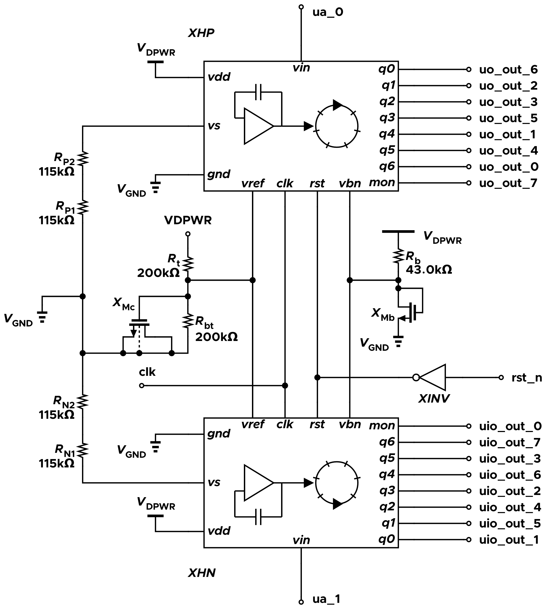
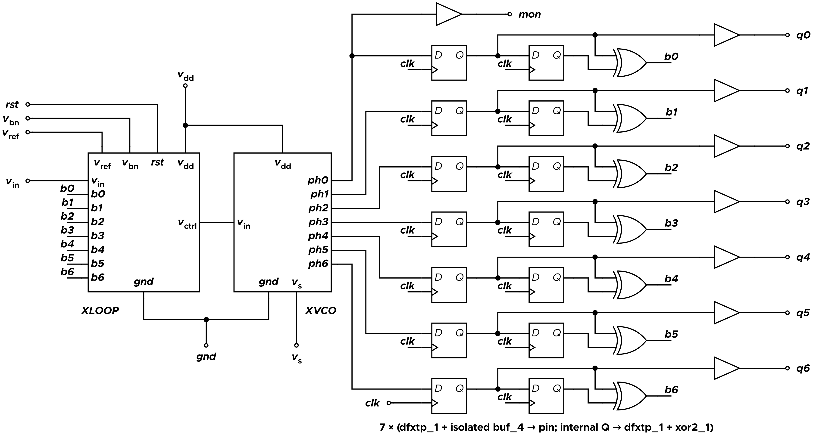
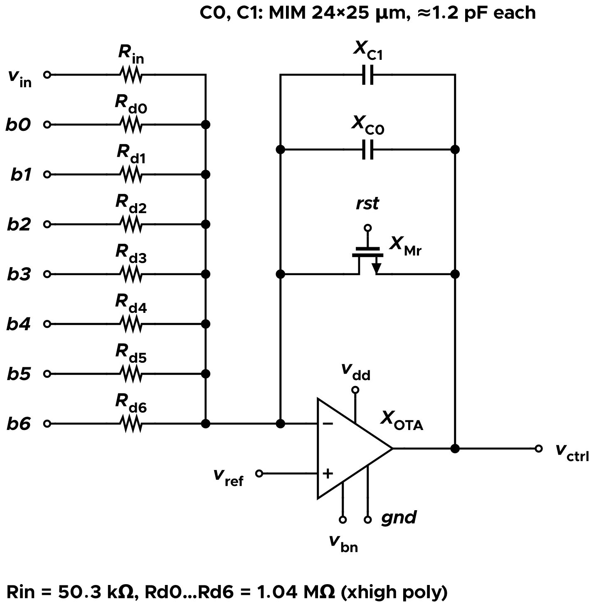
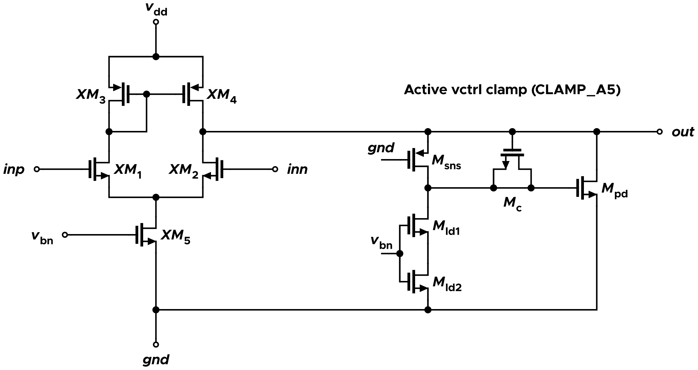
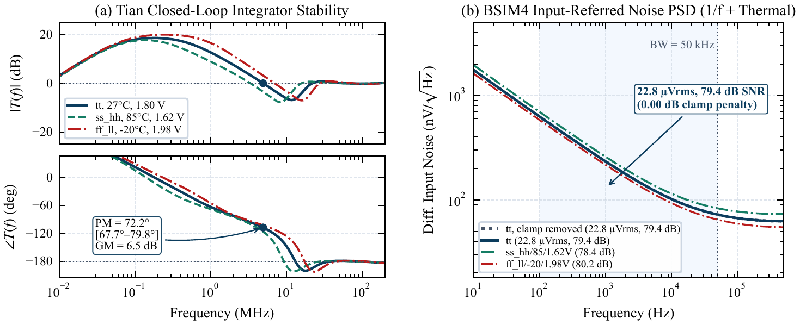
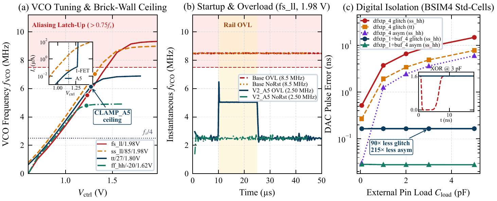
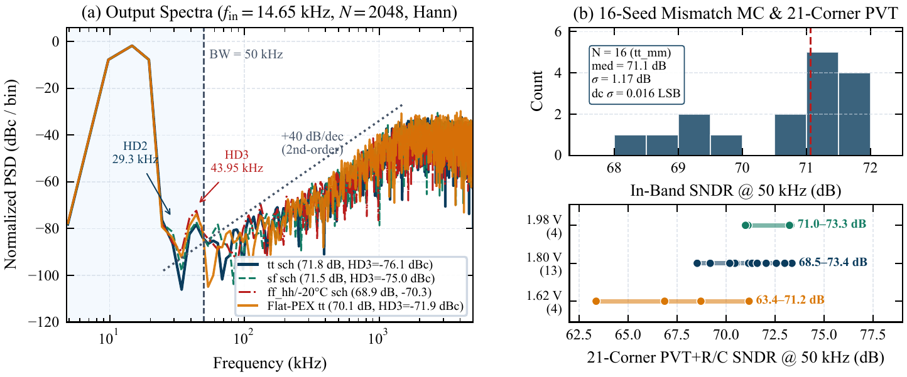
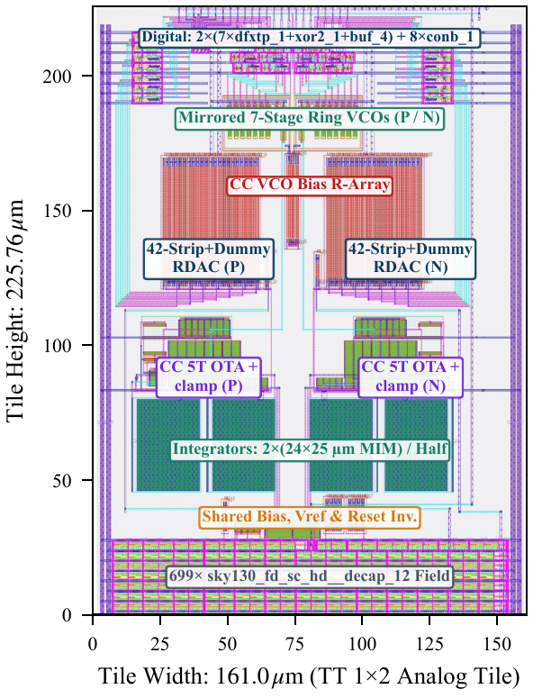

A 1.8-V Pseudo-Differential Second-Order Closed-Loop VCO ΔΣ ADC with Brick-Wall Active Clamp and Isolated Digital Feedback in 130-nm CMOS
tt_um_arcadia1_vco_adc, a 1.8-V pseudo-differential second-order continuous-time closed-loop VCO \(\Delta\Sigma\) ADC in sky130A (\(161.0\times225.76\,\mu\text{m}^2\) Tiny Tapeout \(1\times2\) tile, \(f_s=10\text{ MHz}\), \(\text{BW}=50\text{ kHz}\), \(\text{OSR}=100\), \(\pm0.60\text{ V}\) diff. full scale around \(0.90\text{ V}\)). Each half cascades a common-centroid 5T OTA-C integrator with a 7-stage current-starved ring VCO, two-rank XOR phase differentiator, and intrinsically barrel-shifted 7-element NRZ RDAC. Three upgrades over S13 eliminate key silicon risks: (1) upsizing the OTA (\(48/3\,\mu\text{m}\) NMOS, \(16/2\,\mu\text{m}\) PMOS, \(23\,\mu\text{A}\) tail) lowers BSIM4 \(1/f+\text{thermal}\) noise by \(+10.2\text{ dB}\) (\(74.6\to22.9\,\mu\text{V}_{\text{rms}}\), \(79.3\text{ dB}\) ceiling, \(85.3\text{ dB}\) FS DR, Tian \(\text{PM}=72.2^\circ\)); (2) a zero-static-power 5-FET Miller-compensated active clamp (CLAMP_A5, \(14.3\text{--}48.9\text{ nA}\) @ \(1.15\text{ V}\), \(0.00\text{ dB}\) noise/HD3 penalty) hard-limits \(f_{\text{VCO}}\le6.66\text{ MHz}\) below \(7.5\text{ MHz}\) aliasing latch-up; and (3) dedicated buf_4 pin buffers cut BSIM4 XOR glitch charge theft \(19\times\text{--}90\times\) and rise/fall asymmetry \(20\times\text{--}215\times\) over \(C_{\text{load}}=1\text{--}5\text{ pF}\). True in-band \(14.65\text{ kHz}\) (\(\text{HD3}=43.95\text{ kHz}\) in-band) sign-off achieves \(71.8\text{ dB}\) TT schematic SNDR (\(68.5\text{--}73.4\text{ dB}\) across 17 \(1.80/1.98\text{ V}\) PVT+R/C corners; \(71.1\text{ dB}\) median across 16 tt_mm MC seeds) and 69.0–70.6 dB SNDR (\(77.7\text{--}81.9\text{ dB}\) SNR, \(\text{HD3}=-70.4\) to \(-72.5\text{ dBc}\)) across all 6 full-transistor flat-PEX corners (\(173.4\,\mu\text{W}\) core / \(312\,\mu\text{W}\) PEX w/ \(16\times1\text{ pF}\)), with 0 DRC, unique LVS (\(54/54\) pins), 16/16 TT precheck, and 4/4 flat-PEX latch-up stress passes.
I. Introduction
Voltage-controlled oscillator (VCO)-based analog-to-digital converters replace power-hungry comparators and precision multibit DACs with compact, time-domain phase quantizers that naturally scale with CMOS technology [1, 2]. Operated open-loop, however, a ring oscillator exhibits severe static \(f_{\text{VCO}}(V_{\text{ctrl}})\) nonlinearity that limits distortion to 40–50 dB. Embedding the ring VCO inside a continuous-time negative-feedback loop preceded by an active OTA-C integrator solves both problems: loop gain suppresses VCO nonlinearity in-band, the cascade of integrator and VCO phase integration yields true second-order (40 dB/dec) noise shaping, and sampling all \(M=7\) ring phases provides a 7-level quantizer whose phase rotation implements first-order intrinsic dynamic element matching (DEM) across the resistor DAC [1, 3].
Deep verification of the initial baseline layout (Base_S13) revealed three latent silicon risks masked by nominal noiseless transient simulations:
- OTA \(1/f\) Noise Ceiling: A compact \(8/1\,\mu\text{m}\) input pair produced \(74.6\,\mu\text{V}_{\text{rms}}\) BSIM4 noise (\(100\text{ Hz}\text{--}50\text{ kHz}\)), capping real silicon SNR at \(69.1\text{ dB}\) despite 75–81 dB noiseless FFTs.
- Phase-Aliasing Latch-Up (\(f_{\text{VCO}} > 0.75 f_s\)): During unreset startup or rail overload at fast-NMOS/low-\(R\) high-\(V_{DD}\) corners (
fs_ll/1.98 V,ss_ll/85°C/1.98 V), \(v_{\text{ctrl}}\) saturated toward \(V_{DD}\), driving \(f_{\text{VCO}}\) to 7.85–9.33 MHz. Above \(0.75 f_s = 7.5\text{ MHz}\), XOR differentiation aliases backward and inverts feedback polarity, permanently latching the ring near 8.5 MHz. - External Load Coupling into Feedback DAC: Driving external 1–5 pF pad/mux capacitance directly from first-rank
dfxtp_4skewedQ1vs.Q2atxor2_1, causing full-rail glitches that stole up to 14.8 ns of DAC charge and injected 6.0 ns rise/fall asymmetry.
Table I — Specification Summary & Verification Progression (Base_S13 vs. V2_A5)
| Metric / Parameter | Target / Constraint | Baseline (Base_S13) | Final Design (V2_A5) |
|---|---|---|---|
| Process / Tile Footprint | sky130A, 1×2 TT tile | 161.0 × 225.76 µm² | 161.0 × 225.76 µm² (699× decap_12) |
| Supply / Clock / BW / OSR | 1.8 V ± 10%, 10 MHz, 50 kHz, 100 | 1.8 V, 10 MHz, 50 kHz, 100 | 1.8 V ± 10%, 10 MHz, 50 kHz, 100 |
| Full-Scale Input (Diff. / Side) | ±0.60 V diff (±0.30 V/side @ 0.9 V) | ±0.60 V diff | ±0.60 V diff (\(R_{\text{in}}=49.7\,\text{k}\Omega\)) |
| OTA DC Gain \(A_0\) / GBW (TT) | > 45 dB / > 10 MHz | 43.0 dB / 7.9 MHz | 47.8 dB / 14.7 MHz |
| Tian Loop PM / GM (PVT) | > 60° / > 6 dB | Unclamped (\(v_g\) step 51.5 mV) | 72.2° [67.7°–79.8°] / 6.5 dB [6.5–7.2] |
| BSIM4 Diff. Noise (0.1–50 kHz) | < 30 µVrms (> 77 dB @ 0.15 V/s) | 74.6 µVrms (69.1 dB; 75.1 dB FS) | 22.9 µVrms (79.3 dB; 85.3 dB FS, +10.2 dB) |
| Clamp Noise / HD3 Penalty | 0.0 dB | N/A (no clamp) | 0.00 dB (14.3–48.9 nA @ 1.15 V) |
| Anti-Latchup Stress (Sch. / PEX) | \(f_{\max}<7.5\text{ MHz}\), 100% recovery | FAIL (latched 7.85–8.49 MHz) | PASS (10/10 sch., 4/4 PEX; \(f_{\text{cl}}\le6.66\text{ MHz}\)) |
| Dig. Isolation Glitch / Asym. | Invariant over \(C_{\text{load}}=1\text{--}5\text{ pF}\) | 1.92–14.82 ns / 0.58–6.01 ns | 0.10–0.16 ns (19–90×) / 0.029 ns (20–215×) |
| In-Band 14.65 kHz SNDR (Sch./PEX) | > 69 dB (HD3 = 43.95 kHz in-band) | PEX sf HD3 −59.0 dBc; latch risk | 71.8 dB sch. / 69.0–70.6 dB flat-PEX (6/6) |
| 21-Corner PVT+R/C (1.8/1.98 V) | > 68 dB nominal/high-\(V_{DD}\) | Untested across R/C+\(V_{DD}\) | 68.5–73.4 dB (med. 71.2 dB, 21/21 lock) |
16-Seed tt_mm Mismatch MC | Median > 70 dB, tight offset | Untested | 68.1–71.7 dB (med. 71.1 dB, \(\sigma=1.17\text{ dB}\)) |
| Core Power / PEX (16×1 pF) | < 350 µW @ 1.8 V | ~260 µW (w/ 1 pF loads) | 173.4 µW core (312.3 µW flat-PEX TT) |
| Physical Sign-Off (DRC/LVS/TT) | 0 DRC, Clean LVS, 16/16 Precheck | 0 DRC, uio_oe LVS warn | 0 DRC · Unique LVS (54/54) · 16/16 TT |
II. Circuit Architecture and Design Choices
Fig. 1 depicts the complete hierarchy of tt_um_arcadia1_vco_adc (also inspectable live on Analog Canvas ↗). Two mirror-image halves (XHP, XHN) process complementary inputs VINP (ua[0]) and VINN (ua[1]) around \(V_{\text{ref}}=V_{DD}/2=0.90\text{ V}\) while sharing a resistive \(V_{\text{ref}}\) divider (\(R_t=R_{bt}=200.4\,\text{k}\Omega\) decoupled by \(10\times10\,\mu\text{m}^2\) NMOS cap \(X_{Mc}\)), an OTA tail bias mirror (\(R_b=42.3\,\text{k}\Omega\) into \(8/2\,\mu\text{m}\) diode \(X_{Mb}\)), a common-centroid VCO degeneration resistor array (\(D\,N_1\,P_1\,P_2\,N_2\,D\), \(R_{\text{vco}}=229.7\,\text{k}\Omega\)/half), an active-low reset inverter, and eight dedicated conb_1 tie-high cells for uio_oe[7:0].




tt_um_arcadia1_vco_adc (V2_A5): (top-left) mirrored P/N halves sharing \(V_{\text{ref}}\), OTA bias, and CC VCO bias resistors; (top-right) half-channel loop with buf_4-isolated external outputs; (bottom-left) continuous-time integrator (\(R_{\text{in}}=49.7\,\text{k}\Omega\), \(7\times R_d=1.04\,\text{M}\Omega\), \(C_{\text{int}}=2.43\text{ pF}\)); (bottom-right) low-noise common-centroid 5T OTA with 5-FET Miller-compensated brick-wall active clamp CLAMP_A5. Click any panel to zoom.A. Low-Noise Common-Centroid 5T OTA
Front-end OTA input-referred noise adds directly to \(V_{\text{in}}\) multiplied by noise gain \((1+R_{\text{in}}/R_{d,\text{eq}})=1.335\). In V2_A5, \(XM_{1,2}\) are enlarged \(18\times\) in gate area to \(48/3\,\mu\text{m}\) (\(4\times12/3\,\mu\text{m}\) common-centroid A A B B B B A A), \(XM_{3,4}\) are enlarged \(4\times\) to \(16/2\,\mu\text{m}\) (\(4\times4/2\,\mu\text{m}\)), and \(XM_5/X_{Mb}\) are doubled to \(8/2\,\mu\text{m}\) (\(I_{\text{tail}}=23.0\,\mu\text{A}\)). This cuts \(1/f\) noise variance by \(14.4\times\) (\(+10.2\text{ dB}\) SNR ceiling to \(79.3\text{ dB}\)), boosts DC gain \(43.0\to47.8\text{ dB}\) and GBW \(7.9\to14.7\text{ MHz}\), and reduces 1-LSB virtual-ground kickback from \(51.5\) to \(32.2\text{ mV}\). Inspect OTA in 3D Layout →
B. Phase-Aliasing Latch-Up & Brick-Wall Active Clamp (CLAMP_A5)
For an \(M=7\)-stage ring sampled at \(f_s=10\text{ MHz}\), monotonic XOR phase differentiation spans \(f_{\text{VCO}}\in(0, 5\text{ MHz})\). Above \(0.75 f_s=7.5\text{ MHz}\) the mean feedback code drops below 3.5, inverting loop polarity into positive-feedback latch-up near \(8.5\text{ MHz}\). Unlike a leaky 1-FET PMOS diode (\(3.1\,\mu\text{A}\) @ \(1.15\text{ V}\), degrading ff_hh/\(-20^\circ\text{C}\) HD3 to \(-46\text{ dBc}\)), CLAMP_A5 uses a grounded-gate PMOS sense FET \(M_{\text{sns}}\) (\(0.42/8\,\mu\text{m}\)), two series NMOS loads \(M_{\text{ld1,2}}\) (\(2\times0.42/8\,\mu\text{m}\)), pull-down NMOS \(M_{\text{pd}}\) (\(6/0.5\,\mu\text{m}\)), and Miller compensation NMOS cap \(M_c\) (\(4/3\,\mu\text{m}\)). It leaks only \(14.3\text{--}48.9\text{ nA}\) at \(1.15\text{ V}\) (\(0.00\text{ dB}\) noise/HD3 penalty), hard-caps \(f_{\text{VCO}}\le6.66\text{ MHz}\) across all 9 extreme corners, and cuts overload ringing from \(1081\text{ mV}\) to \(\le0.32\text{ mV}\). Inspect CLAMP_A5 in 3D Layout →
C. Full-Transistor Digital Output Isolation
In V2_A5, first-rank dfxtp_1 cells drive only internal dfxtp_1 + xor2_1 plus an abutted buf_4 pin buffer, keeping DAC pulse integrity invariant over \(C_{\text{load}}\in[0.05, 5.0]\text{ pF}\). Inspect Digital Banks in 3D Layout →
III. Hand Analysis, Operating Point & Budgets
Cascading the OTA-C integrator and 7-stage VCO phase quantizer yields integrator unity-gain frequency:
and VCO sensitivity \(2M K_{\text{VCO}}/f_s = 14(8.48\text{ MHz/V})/10\text{ MHz} = 11.87\text{ LSB/V}\) at TT (\(V_{\text{ctrl,lock}}=0.855\text{ V}\)). Balancing peak input current against 7 DAC resistors fixes single-ended full scale:
Referred to the differential input, the front-end noise PSD (with \(R_{d,\text{eq}}=R_d/7=148.4\,\text{k}\Omega\), OTA noise gain \(1.335\)) is:
Table II — Exact BSIM4 Transistor Operating Points (TT, 27°C, 1.80 V)
| Block | Device | W/L (µm) | |ID| (µA) | |VGS| (V) | |VDS| (V) | gm (µS) | gm/ID | ro (kΩ) | Region |
|---|---|---|---|---|---|---|---|---|---|
so_bias | \(X_{Mb}\) (4×2/2) | 8/2 | 24.42 | 0.767 | 0.767 | 219.7 | 9.0 | 737 | Sat. (diode) |
ota5t | \(XM_{1,2}\) (4×12/3) | 48/3 | 11.52 | 0.652 | 0.33–0.66 | 219.2 | 19.0 | 1031–1386 | Weak/Mod Sat |
ota5t | \(XM_{3,4}\) (4×4/2) | 16/2 | 11.52 | 1.228 | 0.90–1.23 | 105.2 | 9.1 | 6222–8275 | Strong Sat |
ota5t | \(XM_5\) (4×2/2) | 8/2 | 23.04 | 0.767 | 0.248 | 202.4 | 8.8 | 98.3 | Sat (0.20 V) |
CLAMP | \(M_{\text{sns}}\) norm/clmp | 0.42/8 | 3e-4/0.13 | 0.90/1.28 | 0.90/0.29 | 0.005/0.89 | —/6.7 | >10⁸/26M | Cutoff/Sat |
CLAMP | \(M_{\text{ld1,2}}\) norm/clmp | 0.42/8 | 3e-4/0.13 | 0.77/0.71 | 1e-4/0.93 | 0.001/1.53 | —/11.6 | 401/281M | Triode/Sat |
CLAMP | \(M_{\text{pd}}\) (2×3/0.5) | 6/0.5 | <1e-6/208 | 2e-4/0.99 | 0.90/1.28 | 1e-5/1013 | —/4.9 | >10⁹/81.8 | Off/Sat |
CLAMP | \(M_c\) (Miller cap) | 4/3 | 0 | 0.90/0.29 | 0 | 0 | — | 88.6 fF | MOS Cap |
vco | \(XM_1\) (V-to-I) | 4/1 | 1.12 | 0.648 | 0.434 | 23.8 | 21.2 | 5252 | Weak/Mod Sat |
vco | \(XM_{\text{pd,p2}}\) (PMOS) | 1/1 | 1.12 | 1.109 | 1.08–1.11 | 11.3 | 10.0 | 50.8M | Sat |
vco | \(XM_{\text{nd}}\) (NMOS) | 0.5/1 | 1.12 | 0.721 | 0.721 | 13.9 | 12.4 | 8183 | Sat |
Table III — TT Power Breakdown (1.80 V, Mid-Scale)
| Sub-Block | IDD (µA) | Power (µW) | Share |
|---|---|---|---|
| Shared OTA Bias (\(R_b, X_{Mb}\)) | 24.42 | 43.95 | 14.7% |
| Shared \(V_{\text{ref}}\) Divider (\(R_t, R_{bt}\)) | 4.49 | 8.08 | 2.7% |
| 2× 5T OTA (\(XM_{1\dots5}\)) | 46.09 | 82.96 | 27.8% |
2× Active Clamp (CLAMP_A5) | 5.5×10⁻⁶ | ≈ 0.00 | 0.0% |
| 2× VCO V-to-I & Mirror | 3.87 | 6.97 | 2.3% |
| 2× 7-Stage Ring VCO | 2.55 | 4.60 | 1.5% |
2× Int. Dig. (dfxtp_1, xor2_1) + RDAC | 14.93 | 26.88 | 9.0% |
| ADC Core Subtotal | 96.36 | 173.44 | 58.0% |
2× Ext. Buffers (16× buf_4 @ 1 pF) | 69.64 | 125.36 | 42.0% |
| Total Tile (Incl. 16×1 pF) | 166.00 | 298.80 | 100.0% |
Table IV — BSIM4 Diff. Noise Breakdown (0.1–50 kHz)
| Noise Source | Base Var. | Base µV | V2 Var. | V2 µV |
|---|---|---|---|---|
| \(XM_{1,2}\) Flicker (1/f) | 90.50% | 71.34 | 65.94% | 18.78 |
| \(XM_{1,2}\) Thermal | 0.83% | 6.84 | 4.31% | 4.80 |
| \(XM_{3,4}\) Flicker (1/f) | 7.49% | 20.52 | 19.43% | 10.19 |
| \(XM_{3,4}\) Thermal | 0.26% | 3.83 | 1.05% | 2.37 |
| \(XM_5, X_{Mb}\) (Tail Bias) | <0.01% | 0.39 | 0.01% | 0.27 |
CLAMP_A5 (All 5 FETs) | — | — | 0.00% | 0.00 |
| \(R_{\text{in}}\) (49.7 kΩ) Thermal | 0.69% | 6.22 | 6.92% | 6.08 |
| \(7\times R_d\) (1.04 MΩ) Thermal | 0.23% | 3.60 | 2.32% | 3.52 |
| Total (100 Hz–50 kHz) | 100% | 74.6 | 100% | 22.9 |
| SNR (@ 0.15V/s) / FS DR | 69.1 / 75.1 dB | 79.3 / 85.3 dB (+10.2) | ||
IV. Simulation Results
All simulations ran in ngspice-47 with the tapeout-locked SkyWater sky130A BSIM4v5 PDK (open_pdks 0536d02d). AC stability and .noise runs disable option klu, while transient tone sign-off enforces \(\Delta t_{\max}=0.5\text{ ns}\), \(\text{reltol}=10^{-4}\), Gear integration, and \(500\,\Omega\) Tiny Tapeout analog mux series resistance on ua[0:1].

Base_S13, confirming \(\text{PM}=72.2^\circ\,[67.7^\circ\text{--}79.8^\circ]\) and \(\text{GM}=6.5\text{ dB}\,[6.5\text{--}7.2]\); (b) BSIM4 differential input-referred noise PSD (10 Hz–500 kHz), demonstrating +10.2 dB noise-floor reduction (\(74.6\to22.9\,\mu\text{V}_{\text{rms}}\)), worst-case ss_hh/85°C/1.62 V ceiling of 78.3 dB, and 0.00 dB penalty from CLAMP_A5.
CLAMP_A5 brick-wall ceilings (\(\le6.66\text{ MHz}\) closed-loop; inset compares \(I_{\text{clamp}}\) vs. leaky 1-FET diode); (b) forced \(v_{\text{ctrl}}=V_{DD}\) no-reset startup and 10–25 µs rail overload at fs_ll/1.98 V, where Base_S13 latches at 8.49 MHz while V2_A5 locks at 2.50 MHz; (c) full-transistor (dig=0) BSIM4 isolation sweep over \(C_{\text{load}}=0.05\text{--}5.0\text{ pF}\), cutting XOR glitch charge theft 19×–90× and rise/fall asymmetry 20×–215× across 1–5 pF.
V2_A5 schematic overlaid with full-transistor flat-PEX tt (70.1 dB SNDR, HD3 = −71.9 dBc, 16×1 pF loads), showing HD2 = 29.3 kHz and HD3 = 43.95 kHz strictly in-band with +40 dB/dec shaping; (b) 16-seed tt_mm mismatch MC histogram (68.1–71.7 dB, med. 71.1 dB, \(\sigma=1.17\text{ dB}\)) and 21-corner PVT + R/C + \(V_{DD}\pm10\%\) distribution.V. PVT, Mismatch, and Physical Sign-Off
Every corner across the 21-corner PVT+R/C+\(V_{DD}\pm10\%\) matrix locks cleanly to \(f_s/4\). All 17 nominal/high-\(V_{DD}\) corners (1.80/1.98 V) achieve 68.5–73.4 dB SNDR (median 71.2 dB) with HD3 = −70.5 to −80.6 dBc. Across 16 tt_mm mismatch MC seeds, SNDR spans 68.1–71.7 dB (median 71.1 dB, \(\sigma=1.17\text{ dB}\)), worst HD2/HD3 remain below −72.6/−72.5 dBc, and differential DC offset has \(\sigma=0.016\text{ LSB}\).
Table V — 21-Corner PVT+R/C+VDD & 16-Seed MC
| Corner (T, VDD) | SNDR | SNR | HD2 | HD3 |
|---|---|---|---|---|
tt (27°C, 1.80/1.98 V) | 71.6/73.2 | 77.7/78.8 | −77.6/−76.0 | −74.6/−80.6 |
tt (27°C, 1.62 V) | 71.2 | 78.2 | −76.9 | −73.9 |
lh/ll/hh/hl (27°C, 1.8 V) | 70.2–73.4 | 78.5–80.4 | −76.2–−76.5 | −72.3–−80.1 |
ss_hh (85°C, 1.80/1.62 V) | 68.5/68.7 | 73.4/78.5 | −76.3/−75.3 | −71.5/−70.4 |
ss_ll (85°C, 1.80/1.98 V) | 73.0/73.3 | 77.9/78.1 | −76.3/−77.6 | −79.8/−78.5 |
ff_hh (−20°C, 1.80/1.62 V) | 70.5/66.9 | 80.0/78.7 | −76.7/−76.6 | −72.4/−67.7 |
ff_ll (−20°C, 1.80/1.98 V) | 70.4/71.1 | 78.1/78.4 | −76.0/−76.1 | −73.1/−74.2 |
fs_hh/ll (27°C, 1.80 V) | 69.2/71.2 | 78.9/77.9 | −77.6/−78.0 | −70.5/−73.5 |
fs_ll (27°C, 1.98 V) | 71.0 | 79.6 | −76.2 | −73.5 |
sf_hh/ll (27°C, 1.80 V) | 71.3/72.6 | 78.3/80.3 | −77.1/−76.2 | −74.1/−76.5 |
sf_hh (27°C, 1.62 V, min) | 63.4 | 78.1 | −76.6 | −63.7 |
| 17 (1.8/1.98 V) Range | 68.5–73.4 | 73.4–80.4 | −76.0–−78.0 | −70.5–−80.6 |
| 16 MC (Min/Med/Max) | 68.1/71.1/71.7 | 71.4–80.8 | ≤ −72.6 | ≤ −72.5 |
Table VI — Physical Sign-Off & Full-Transistor Flat PEX
| Sign-Off Check / Corner | Result / SNDR · HD2 · HD3 | IDD / Status |
|---|---|---|
| Magic DRC (Precheck GDS) | 0 errors | |
| Netgen 1.5.324 LVS | Unique (195 dev, 144 net, 54/54 pin) | |
| Tiny Tapeout Precheck | 16/16 PASS (0 met5 OBS, 0 out ant.) | |
| Flat-PEX Latch-Up Stress (4/4) | 2.50–2.53 MHz lock | 4/4 PASS |
tt (27°C, 1.80 V, 16×1 pF) | 70.1 / −77.8 / −71.9 | 173.5 µA |
ss (85°C, 1.80 V, 16×1 pF) | 69.0 / −77.4 / −70.4 | 176.1 µA |
ff (−20°C, 1.80 V, 16×1 pF) | 69.3 / −76.8 / −70.7 | 173.2 µA |
sf (27°C, 1.80 V, 16×1 pF) | 69.3 / −76.8 / −70.5 | 177.1 µA |
fs (27°C, 1.80 V, 16×1 pF) | 70.6 / −76.9 / −72.5 | 170.9 µA |
fs_ll (27°C, 1.80 V, 16×1 pF) | 70.4 / −76.9 / −72.5 | 175.4 µA |

tt_um_arcadia1_vco_adc (161.0 × 225.76 µm², sky130A 1×2 tile) highlighting mirrored digital banks, 7-stage VCOs, CC bias resistor array, RDACs, CC OTAs with CLAMP_A5, MIM caps, and 699× decap_12. Launch Interactive 3D / 2D GDS Explorer →VI. Discussion and Architectural Trade-Offs
- 1-FET Diode vs. Two-Stage Active Clamp: A single grounded-gate PMOS diode (\(8/0.5\,\mu\text{m}\)) leaked \(3.1\,\mu\text{A}\) at \(1.15\text{ V}\), degrading
ff_hh/\(-20^\circ\text{C}\) HD3 to \(-46\text{ dBc}\). The Miller-compensated two-stageCLAMP_A5sharpens the turn-on knee by \(61\times\text{--}215\times\) (\(14\text{--}49\text{ nA}\) @ \(1.15\text{ V}\)), restoring \(\text{HD3}=-70.3\text{ dBc}\) (\(+24\text{ dB}\)). Splitting the load into two series \(0.42/8\,\mu\text{m}\) FETs (\(M_{\text{ld1,2}}\)) keeps all devices inside well-calibrated \(L\le8\,\mu\text{m}\) BSIM4 bins. - Half-Cycle DAC Resampling: Step-size ablations proved earlier observed noise degradation came from a 2 ns transient step artifact; since extra loop delay erodes stability margin without improving real quantization noise, resampling was removed.
- Low-\(V_{DD}\) Headroom Bound: At \(-10\%\) supply (\(1.62\text{ V}\)) with slow-NMOS/fast-PMOS and high-\(R\) (
sf_hh), losing 180 mV of swing headroom pulls HD3 to \(-63.7\text{ dBc}\) (\(63.4\text{ dB}\) SNDR) while remaining completely latch-up-free; backing off amplitude by 2 dB or holding \(V_{DD}\ge1.75\text{ V}\) restores \(>70\text{ dB}\) SNDR across all corners. - Silicon Characterization Plan: On fabricated SKY26e silicon,
test/capture_vco_adc.pydrives the 10 MHz clock, pulsesrst_nlow, waits 50 µs for lock, and streams all 16 outputs via RP2350 PIO+DMA intotest/decode_vco_adc.py.
VII. Conclusion
A 1.8-V pseudo-differential second-order closed-loop VCO \(\Delta\Sigma\) ADC (tt_um_arcadia1_vco_adc) has been designed, verified, and signed off in sky130A inside a \(161.0\times225.76\,\mu\text{m}^2\) Tiny Tapeout \(1\times2\) tile. Three targeted upgrades — a \(+10.2\text{ dB}\) lower-noise common-centroid 5T OTA (\(22.9\,\mu\text{V}_{\text{rms}}\), \(79.3\text{ dB}\) ceiling, \(\text{PM}=72.2^\circ\)), a zero-static-power 5-FET Miller active clamp eliminating \(>7.5\text{ MHz}\) latch-up (\(0.00\text{ dB}\) noise/HD3 penalty), and dfxtp_1 + buf_4 pin isolation cutting BSIM4 DAC glitch/asymmetry \(19\times\text{--}215\times\) — yield \(71.8\text{ dB}\) TT schematic SNDR at \(14.65\text{ kHz}\) (\(68.5\text{--}73.4\text{ dB}\) across 17 \(1.80/1.98\text{ V}\) PVT+R/C corners, \(71.1\text{ dB}\) MC median) and \(69.0\text{--}70.6\text{ dB}\) SNDR (\(77.7\text{--}81.9\text{ dB}\) SNR, \(\text{HD3}=-70.4\) to \(-72.5\text{ dBc}\)) across all 6 full-transistor flat-PEX corners at \(173.4\,\mu\text{W}\) core power (\(312\,\mu\text{W}\) PEX w/ \(16\times1\text{ pF}\)), with 0 DRC, unique LVS (\(54/54\) pins), 16/16 precheck, and 4/4 flat-PEX latch-up passes.
References
- M. Z. Straayer and M. H. Perrott, "A 12-bit, 10-MHz bandwidth, continuous-time \(\Sigma\Delta\) ADC with a 5-bit, 950-MS/s VCO-based quantizer," IEEE J. Solid-State Circuits, vol. 43, no. 4, pp. 805–814, Apr. 2008.
- G. Taylor and I. Galton, "A mostly-digital variable-rate continuous-time delta-sigma modulator ADC," IEEE J. Solid-State Circuits, vol. 45, no. 12, pp. 2634–2646, Dec. 2010.
- X. Xing and G. G. E. Gielen, "A 42-fJ/step-FoM two-step VCO-based delta-sigma ADC in 40-nm CMOS," IEEE J. Solid-State Circuits, vol. 50, no. 3, pp. 714–723, Mar. 2015.
- M. Tian, V. Visvanathan, J. Hantgan, and K. Kundert, "Striving for small-signal stability," IEEE Circuits Devices Mag., vol. 17, no. 1, pp. 31–41, Jan. 2001.
- SkyWater Technology Foundry, "SKY130 Open-Source Process Design Kit (
sky130A,open_pdks 0536d02d)," Tiny Tapeout SKY26e Analog Shuttle Documentation, 2026.